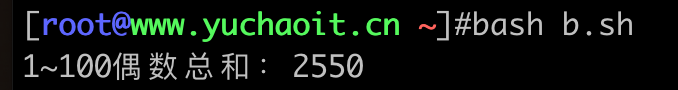
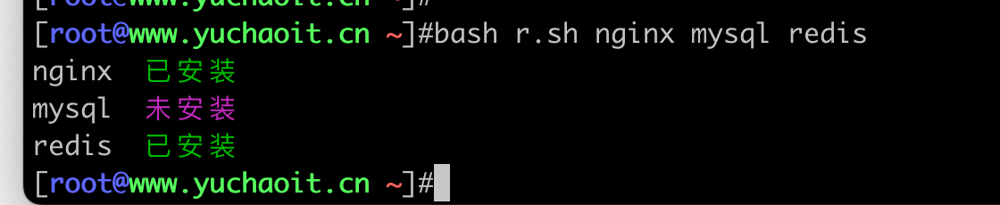
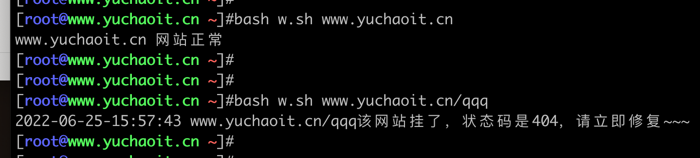
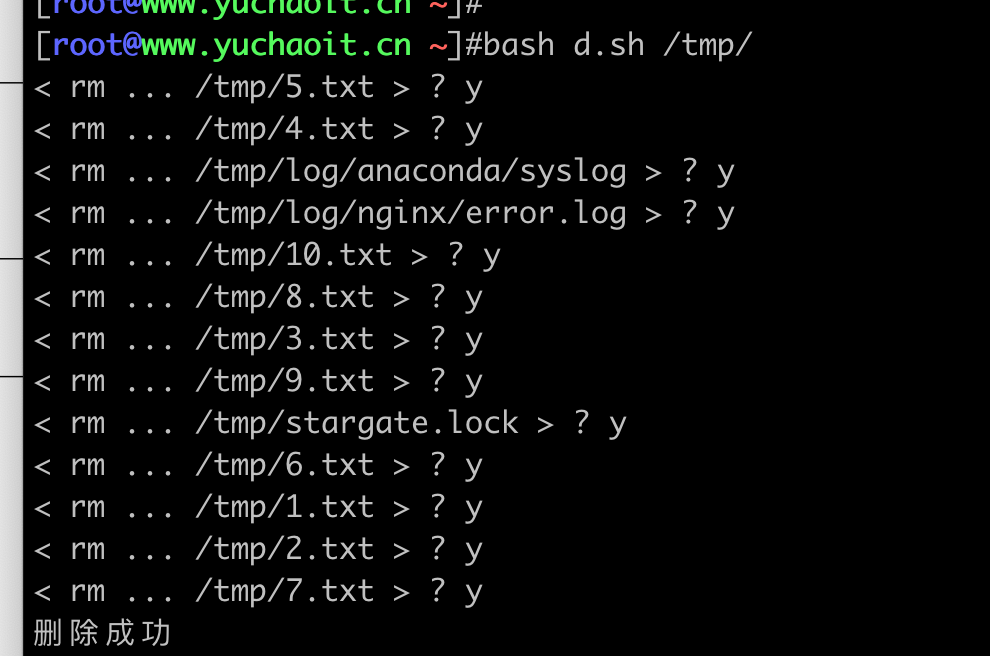
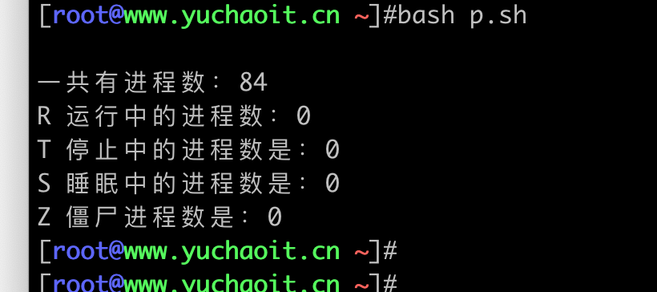
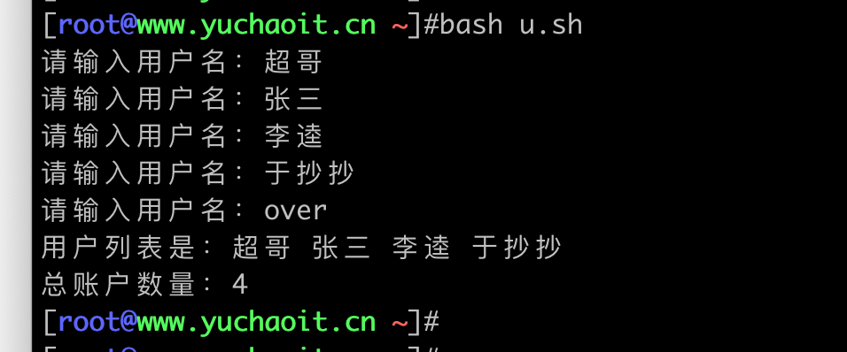
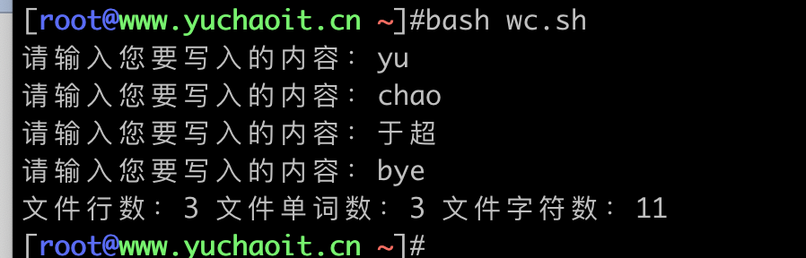
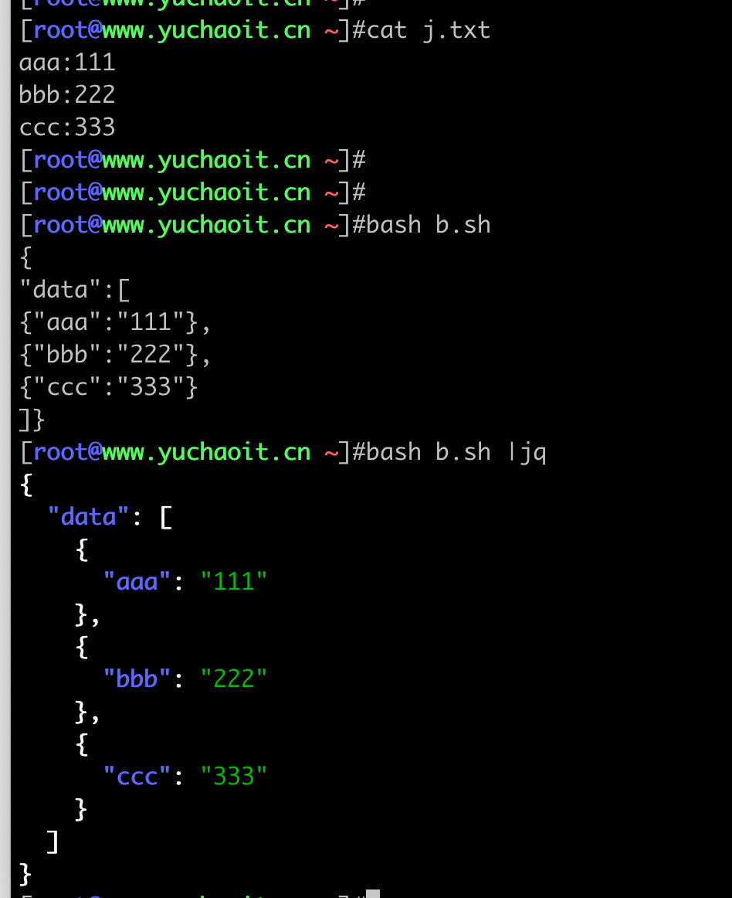

脚本练习题库
于超老师提醒；
1. 尽可能的考虑到bug场景、进行逻辑判断，减少bug，优化代码
2. 尝试考虑换一种写法，思路，完成如下题目。
3. 友情提醒（有时候，走进死胡同的时候，可以考虑换一个思考方式。。）
4. 学习编程，任何、每一个新人都有一个感觉，能看懂，写不出来，没思路
这个世纪难题，超哥给你说！！！
每一位和我说过这样话的同学，在工作半年、一年后，全部再也不说了，为什么？因为处理的问题足够多了，写的脚本足够多了，在你写50、100、150个脚本之后，蹭一下，就开窍了！！
所以、无他、写、写、写
课上写、自己找案例写、写他个三天三夜、三百个日夜，如果还不会，立即、果断、放弃！
反之、你就必然能打通任督二脉、进入自动化运维的境界！
shell主要用于处理自动化服务器的运维问题
因此通过本章的练习题，让你
1.理解能用在什么场景，解决什么问题
2.参考解决问题的开发思路，开发逻辑
3.理解后自行优化代码，丰富代码，增强自己的编程思维逻辑。
4.面试官问你，shell写的如何？写过哪些脚本，到时候大胆的说，我写过xxxx，也就百十来个脚本吧，尽管问
你期望薪资多少？20k 😄
5.当然后续还要结合者，如zabbix监控脚本，持续集成代码发布脚本、数据库维护脚本、容器管理脚本，等高级场景，继续不断学习！！
1.hello linux脚本
#!/bin/bash
echo "hello linux"
2.通过接收位置变量创建系统用户、且非交互式设置密码
#!/bin/bash
useradd $1
echo $2 | passwd --stdin $1
3.每周五夜里3点备份系统所有日志文件到/backup_log/
要求备份文件添加时间戳
#!/bin/bash
# author: www.yuchaoit.cn
if [ ! -d /backup_log ];then
mkdir /backup_log
fi
tar -zcf /backup_log/all_log_$(date +%F-%T).tar.gz /var/log
# 写入crontab
echo "00 03 * * 5 /my_shell/logbackup.sh" >> /var/spool/cron/root
4.一键部署wordpress
脚本功能需求，支持如下菜单
1. 修改系统yum源为自建yum仓库
2. 通过yum一键部署LNMP，确保wordpress可以访问。
3. 检查wordpress全部组件是否运行中
5.系统资源监控
# 当内存少于512M且根分区小于1G时，立即给于超老师发一封邮件，发送机器资源情况。
#!/bin/bash
# Author: www.yuchaoit.cn
disk_size=$(df |awk '/\/$/{print $4}')
mem_size=$(free |awk '/Mem/{print $4}')
if [ $disk_size -le 10240000 -a $mem_size -le 512000 ];then
mail -s "Warning server"<<'EOF'
服务器资源不足，警告！！
EOF
fi
6.生成随机数，让用户猜数字，猜大小
分别提示，大了，还是小了；
猜不对就一直猜，直到猜对；
#!/bin/bash
# Author:www.yuchaoit.cn
# 提示RANDOM随机内置变量，默认值是0 ~ 32767的整数，利用取余算法，改为1~100的随机数
num=$[RANDOM%100+1]
# 接收用户输入，死循环接收
while true
do
read -p "请输入1~100的一个数字，猜不对你就一直猜：" your_num
# 限制必须是数字
# -z 只要没内容就位true
#
if [ -z "$(echo $your_num|sed -rn '/^[0-9]+$/p')" ];then
echo "请输入纯数字整数！"
continue
fi
if [ $your_num -eq $num ];then
echo "可以的老铁！！猜对了！！奖励一个大逼斗！！"
exit
elif [ $your_num -gt $num ];then
echo "Oops、猜大了，再来！"
else
echo "Oops、猜小了、再来！"
fi
done
7.检测是否是超级用户，是执行安装命令，不是则提示无权限。
基于字符串判断
#!/bin/bash
if [ $USER == "root" ];then
yum install redis -y
else
echo "无权限安装，请切换到root！！"
fi
基于uid判断
#!/bin/bash
# author: www.yuchaoit.cn
if [ $UID -eq 0 ];then
yum install redis -y
else
echo "无权限安装，请切换到root！！"
fi
8.用户创建脚本
需求
1. 正确输入账号密码，则立即创建
2. 若不输入用户，则提示用户必须输入账号后且结束程序
3. 如果不输入密码，则用默认密码 chaoge666
脚本
#!/bin/bash
read -p "please input your account：" user
# -z 判断变量是否为空
if [ -z $user ];then
echo "必须输入账号！！"
exit 2
fi
# 屏蔽密码显示
stty -echo
read -p "please input your password：" password
stty echo
# 如果password变量值为空，则设置默认值，否则以有值为准。
password=${password:-chaoge666}
# 创建用户、设置密码
useradd "$user"
echo "$password" | passwd --stdin $user
9.开发人机游戏，石头剪刀布
#!/bin/bash
# author: www.yuchaoit.cn
# color code
color1="\033[33m"
color2="\033[0m"
# 设置人机出拳规则
game=(石头 剪刀 布)
choice=$[${RANDOM}%3]
# 机器人本次出拳
computer_choice=${game[$choice]}
# 将人机出拳的算法，通过数组，随机的出拳选择
echo -e "请输入您的出拳：
0. 石头
1. 剪刀
2. 布"
read -p "请输入0 ~ 1 ~ 2 的选择：" person
if [ -z "$(echo $person|sed -rn '/^[0-9]+$/p')" ];then
echo "请输入纯数字整数！"
exit
fi
person_choice=${game[$person]}
case $person in
0)
# 本次用户输入 的是拳头
# 如果计算机本次是0，也是拳头
if [ $choice -eq 0 ];then
echo "玩家出拳 ${person_choice}"
echo "机器人出拳 ${computer_choice}"
echo -e "${color1} 平局！！！${color2}"
elif [ $choice -eq 1 ];then
echo "玩家出拳 ${person_choice}"
echo "机器人出拳 ${computer_choice}"
echo -e "${color1} 玩家胜利！！${color2}"
else
echo "玩家出拳 ${person_choice}"
echo "机器人出拳 ${computer_choice}"
echo -e "${color1} 机器人胜利！！${color2}"
fi
;;
1)
# 本次用户出拳是 剪刀
# 如果计算机本次是0，是拳头
if [ $choice -eq 0 ];then
echo "玩家出拳 ${person_choice}"
echo "机器人出拳 ${computer_choice}"
echo -e "${color1} 机器人胜利！${color2}"
elif [ $choice -eq 1 ];then
echo "玩家出拳 ${person_choice}"
echo "机器人出拳 ${computer_choice}"
echo -e "${color1} 平局！！${color2}"
else
echo "玩家出拳 ${person_choice}"
echo "机器人出拳 ${computer_choice}"
echo -e "${color1} 玩家胜利！！！！${color2}"
fi
;;
2)
# 本次用户输入的是 布
if [ $choice -eq 0 ];then
echo "玩家出拳 ${person_choice}"
echo "机器人出拳 ${computer_choice}"
echo -e "${color1} 玩家胜利 ${color2}"
elif [ $choice -eq 1 ];then
echo "玩家出拳 ${person_choice}"
echo "机器人出拳 ${computer_choice}"
echo -e "${color1} 机器人胜利！！${color2}"
else
echo "玩家出拳 ${person_choice}"
echo "机器人出拳 ${computer_choice}"
echo -e "${color1} 平局！！${color2}"
fi
;;
*)
echo "只能输入 0 ~1 ~ 2 !!!"
;;
esac
10.探测主机存活脚本（for版）
注意使用多进程后台模式
语法是，将需要多进程执行的命令包裹起来，放入后台
for (( i=0;i<10;i++))
do
{
命令集
} &
done
#!/bin/bash
# author: www.yuchaoit.cn
for i in {1..254}
do
{
# 发2个数据包 ，数据包等待间隔0.2秒 -w 1秒后停止ping
ping -c 2 -i 0.2 -w 1 192.168.0.${i} >/dev/null 2>&1
if [ $? -eq 0 ];then
echo "192.168.0.${i} 运行中~~~~~" >> up_ip.log
else
echo "192.168.0.${i} 挂了" >> down_ip.log
fi
} &
done
# 检查
cat down_ip.log |sort -t . -k 4 -rn
11.探测主机存活脚本（while版）
#!/bin/bash
# author: www.yuchaoit.cn
i=1
while [ $i -le 254 ]
do
{
# 发2个数据包 ，数据包等待间隔0.2秒 -w 1秒后停止ping
ping -c 2 -i 0.2 -w 1 192.168.0.${i} >/dev/null 2>&1
if [ $? -eq 0 ];then
echo "192.168.0.${i} 运行中~~~~~" >> up_ip.log
else
echo "192.168.0.${i} 挂了" >> down_ip.log
fi
} &
let i++
done
12.开发拷贝脚本，且显示进度条
#!/bin/bash
# author: www.yuchaoit.cn
progress_bar(){
while true
do
echo -n "#"
sleep 0.2
done
}
# 后台运行进度条
progress_bar &
# 执行你的命令
cp -a $1 $2
# 结束后干掉 最后一个后台任务
#echo "进度条后台进程id是：$!"
#echo "当前脚本PID是：$$"
kill -9 "$!"
echo "程序完成"
13.九九乘法表
#!/bin/bash
# author: www.yuchaoit.cn
for i in `seq 9`
do
for j in `seq $i`
do
echo -n "$i * $j = $[ $i * $j ]\t"
done
echo
done
14.实时监控eth0网卡收、发的数据包
#!/bin/bash
# author: www.yuchaoit.cn
while true
do
# 数据1
rx1=$(ifconfig eth0 |grep "RX packets" | awk '{print $5}')
# 数据更新间隔1s
sleep 1
# 数据2
rx2=$(ifconfig eth0 |grep "RX packets" | awk '{print $5}')
# 发送数据
tx1=$(ifconfig eth0 |grep "TX packets" | awk '{print $5}')
sleep 1
tx2=$(ifconfig eth0 |grep "TX packets" | awk '{print $5}')
echo "网卡eth0流量rx接收量是：$[ ($rx2 -$rx1)/1024 ] kb/s"
echo "网卡eth0流量tx发送量是：$[($tx2 - $tx1)/1024 ] kb/s"
echo
done
# 测试上传、下载资料试试？
改进版
试试将脚本改为通用的，可以随意监控不同网卡的数据？
15.读取用户文件，再系统中创建该用户，密码默认www.yuchaoit.cn
# 数据文件
[root@www.yuchaoit.cn ~]#cat user.txt
yuchao
chaochao
zhangsan
erpang
goudan
# 脚本
#!/bin/bash
# author: www.yuchaoit.cn
for i in $(cat user.txt)
do
useradd $i
echo "www.yuchaoit.cn" | passwd --stdin $i
done
16.删除系统中普通用户（系统初始化）
#!/bin/bash
# author: www.yuchaoit.cn
# 统计普通用户有多少
users=$(awk -F ':' '{if($3>=1000)print $1}' /etc/passwd)
for u in $users
do
userdel -rf $u
if [ $? -eq 0 ];then
echo "删除用户 $u 成功..."
else
echo "删除用户 $u 失败........."
fi
done
17.批量修改文件后缀脚本
需求
支持通过传递位置参数修改，用法
bash change_file.sh txt log
bash change_file.sh log doc
脚本开发
#!/bin/bash
# author: www.yuchaoit.cn
for i in $(ls *.$1)
do
# 利用变量子串功能实现删除文件后缀，拼接新后缀
mv $i ${i%.*}.$2
done
18.查看本机建立的tcp连接数量
[root@www.yuchaoit.cn /tmp]#netstat -ant | awk 'NR>2{print $5}' | awk -F ':' '{print $1}' | sort -rn | uniq -c
1 169.254.0.138
1 115.171.167.199
1 11.149.252.62
4 0.0.0.0
1
19.计算100以内的数相加
分贝用for、while的写法
#!/bin/bash
# author: www.yuchaoit.cn
sum=0
for i in $(seq 100)
do
sum=$[$sum+i]
done
echo "总和：${sum}"
19.2 求1~100的偶数和（分别用for、while去写）
let计算法
#!/bin/bash
# author: www.yuchaoit.cn
sum=0
for ((i=0;i<=100;i++))
do
if [ $[i%2] -eq 0 ];then
let sum=$sum+$i
fi
done
echo "1~100偶数总和：$sum"
# 使用let命令可以执行一个或者多个算术表达式，其中的变量名无需使用$符号。
# 如果表达式中含有空格或者其他特殊字符，则必须将其引用起来。

$(( ))计算法
#!/bin/bash
# author: www.yuchaoit.cn
sum=0
for ((i=0;i<=100;i++))
do
if [ $[i%2] -eq 0 ];then
sum=$(( $sum+i ))
fi
done
echo "1~100偶数总和：$sum"
# 使用$((…))这种形式进行算术写法比较自由，无需对运算符和括号进行转义处理，可以使用松散或者紧凑的格式来书写。
带有步长的for循环
#!/bin/bash
# author: www.yuchaoit.cn
sum=0
for i in {0..100..2}
do
sum=$[ $sum+i ]
done
echo "1~100偶数总和：$sum"
使用while循环
#!/bin/bash
# author: www.yuchaoit.cn
sum=0
count=0
while [ $count -le 100 ]
do
sum=$[$sum+$count]
let count=$count+2
done
echo "1~100偶数总和：$sum"
19.3 上述求偶数和、改为奇数和写
答案自己写。。
20.统计当前系统有多少允许登录的用户
#!/bin/bash
# author: www.yuchaoit.cn
# 方案1
grep "bash$" /etc/passwd |wc -l
# 方案2
[root@www.yuchaoit.cn ~]#awk -F : '/bash$/{i++}END{print i}' /etc/passwd
2
21.开发nginx的启停维护脚本
需求，只支持一个位置参数，提供 start/stop/status/restart/功能
22.文件md5校验脚本
需求
1. 要求监控 /etc/下所有conf结尾的配置文件，记录md5值
#!/bin/bash
# author: www.yuchaoit.cn
for file in $(find /etc/ -name *.conf)
do
md5sum $file >> /home/etc_conf_file_md5.log
done
23.开发脚本检测软件是否安装
#!/bin/bash
# author: www.yuchaoit.cn
if [ $# -eq 0 ];then
echo "大哥，好歹传一个软件参数吧？"
echo "用法【 bash $0 软件名1 软件名2 软件名3...】"
fi
# 遍历所有参数
for package in "$@"
do
rpm -q ${package} &>/dev/null
if [ $? -eq 0 ];then
echo -e "${package} \033[32m 已安装 \033[0m"
else
echo -e "${package} \033[35m 未安装 \033[0m"
fi
done

24.监控HTTP服务器状态
#!/bin/bash
# author: www.yuchaoit.cn
url=$1
# 检测命令
# curl -m 最大超时时间 -s 不显示日志 -o 导出页面内容 -w 格式化需要显示的信息
check_http(){
status_code=$(curl -m 5 -s -o /dev/null -w %{http_code} $url)
}
check_http
now=$(date +%F-%T)
if [ $status_code -ne 200 ];then
echo "$now ${url}该网站挂了，状态码是${status_code}，请立即修复~~~"
else
echo "$url 网站正常"
fi

25.删除目录下所有0字节文件
注意删除脚本，别瞎写。。。
#!/bin/bash
# author: www.yuchaoit.cn
dir=$1
find $dir -type f -size 0 -ok rm -f {} \; && echo "删除成功"

26.获取cpu厂家信息
[root@www.yuchaoit.cn ~]#awk '/vendor_id/{print $3}' /proc/cpuinfo
GenuineIntel
27.shell炸弹
死循环，导致函数死循环调用自己，立即死机
.( ){ .| . &};.
别手贱执行，哈哈
解释，等于
.()
{
.|. &
};
.
于超老师这么写，你是不是就大概看懂了？
解释
1. 定义函数，名字是小数点
2. 函数体开始
3. 函数递归调用自己，且利用管道符，创建新进程，放入后台（核心炸弹就是这里，死循环fork创建进程，导致系统资源耗尽，死机）
4. 函数结束
5. 最后调用这个小数点函数
28.关闭局域网中所有机器
#!/bin/bash
# author: www.yuchaoit.cn
for i in {1..254}
do
# 除了master-61机器全部关了
[ $i -eq 61 ] && continue
echo "正在关闭 172.16.1.$i"
ssh 172.16.1.$i poweroff
done
29.获取网卡设备MAC地址
# 通过传递网卡名字，可以直接提取出ip和mac地址信息
#!/bin/bash
# author: www.yuchaoit.cn
device=$1
echo -e "$device
mac是：$(ip addr show $device |awk '/ether/{print $2}')
ip是：$(ip addr show $device |awk '/inet\s/{print $2}')"
30.进程分析脚本
#!/bin/bash
# author: www.yuchaoit.cn
running=0
sleeping=0
stoped=0
zombie=0
# 通过提取proc目录下的所有进程id的目录，进行分析
for pid in /proc/[1-9]*
do
# 计算变量数量
all_pid=$[all_pid+1]
# 获取进程状态stat
pid_stat=$(awk '{print $3}' $pid/stat)
# 批量筛选进程
case $stat in
R)
running=$[running+1]
;;
T)
stopped=$[stoped+1]
;;
S)
sleeping=$[sleeping+1]
;;
Z)
zombie=$[zombie+1]
;;
esac
done
echo -e "
一共有进程数：$all_pid
R 运行中的进程数：$running
T 停止中的进程数是：$stoped
S 睡眠中的进程数是：$sleeping
Z 僵尸进程数是：$zombie"

31.判断用户输入数据类型
case in 的 pattern 部分支持简单的正则表达式，具体来说，可以使用以下几种格式：
用法 说明
* 表示任意字符串。
？ 表示单个字符
[abc] 表示 a、b、c 三个字符中的任意一个。比如，[15ZH] 表示 1、5、Z、H 四个字符中的任意一个。
[m-n] 表示从 m 到 n 的任意一个字符。比如，[0-9] 表示任意一个数字，[0-9a-zA-Z] 表示字母或数字。
| 表示多重选择，类似逻辑运算中的或运算。比如，abc | xyz 表示匹配字符串 “abc” 或者 “xyz”。
不支持其他特殊正则，否则就是去了条件匹配的意义了。
代码
#! 接收用输入数据，判断是 数字、字母、特殊符号 哪一类
#!/bin/bash
# author: www.yuchaoit.cn
read -p "请输入1个字符：" key
case $key in
[a-z]|[A-Z])
echo "是字母哦~~"
;;
[0-9])
echo "是数字哦~~~"
;;
*)
echo "您输入的是字母、数字以外的特殊字符~~~"
;;
esac
32. 判断用户输入是yes或no
模拟，如yum安装软件适，系统让你输入的yes确认，开发功能。
#!/bin/bash
# author: www.yuchaoit.cn
read -p "Are you ok? " ok
case $ok in
y|Y|Yes|YES|yes)
echo "you enter ： $ok"
;;
n|N|NO|no)
echo "your enter： $ok"
;;
*)
echo "大哥，我请你看看要求，只能输入yes or no 可以吗？"
esac
33.显示系统开放了多少个端口
[root@www.yuchaoit.cn ~]#ss -tunlp|awk '{print $1,$5}' |awk -F: '{print "协议："$1,"端口："$NF}'
协议：Netid Local 端口：Netid Local
协议：tcp * 端口：22717
协议：tcp * 端口：3306
协议：tcp * 端口：22222
协议：tcp * 端口：80
协议：tcp [ 端口：8090
34.读取用户输入，将用户名保存为数组
#!/bin/bash
# author: www.yuchaoit.cn
i=0
# 当用户输入over后退出程序
while true
do
read -p "请输入用户名：" key
if [ $key == "over" ];then
break
else
name_list[$i]=$key
let i++
fi
done
echo "用户列表是：${name_list[*]}"
echo "总账户数量：${#name_list[*]}"

35.日期格式化
脚本中添加日期格式化是常见做法
#!/bin/bash
#Author:www.yuchaoit.cn
echo "显示星期简称(如:Sun)"
date +%a
echo "显示星期全称(如:Sunday)"
date +%A
echo "显示月份简称(如:Jan)"
date +%b
echo "显示月份全称(如:January)"
date +%B
echo "显示数字月份(如:12)"
date +%m
echo "显示数字日期(如:01 号)"
date +%d
echo "显示数字年(如:01 号)"
date +%Y
echo "显示年-月-日"
date +%F
echo "显示小时(24 小时制)"
date +%H
echo "显示分钟(00..59)"
date +%M
echo "显示秒"
date +%S
echo "显示纳秒"
date +%N
echo "组合显示"
date +"%Y%m%d %H:%M:%S"
36.生成字签证书
#!/bin/bash
#Author:www.yuchaoit.cn
read -p "请输入存放证书的目录：" cert_dir
if [ ! -d $cert_dir ];then
echo "证书目录不存在"
exit
fi
read -p "请输入秘钥文件名：" key_name
# openssl创建私钥
openssl genrsa -out ${cert_dir}/${key_name}.key
# openssl创建证书
openssl req -new -x509 -key ${cert_dir}/${key_name}.key -subj "/CN=www.yuchaoit.cn" -out ${cert_dir}/${key_name}.crt
37.用awk开发wc命令统计
wc命令参数作用
#!/bin/bash
#Author:www.yuchaoit.cn
[root@www.yuchaoit.cn ~]#cat test.log
yuchao01 9
bob01 6
jack01 7
[root@www.yuchaoit.cn ~]#
[root@www.yuchaoit.cn ~]#
# 统计有几行
[root@www.yuchaoit.cn ~]#wc -l test.log
3 test.log
# 统计最长行的字符数
[root@www.yuchaoit.cn ~]#wc -L test.log
8 test.log
# 统计总共字符数（每一行结尾多统计了一个$终止符)
[root@www.yuchaoit.cn ~]#wc -m test.log
22 test.log
# 统计单词个数
[root@www.yuchaoit.cn ~]#wc -w test.log
3 test.log
使用awk实现
# awk命令的内置函数length 也可以统计字符数，
[root@www.yuchaoit.cn ~]#awk '{chars+=length($0)+1;words+=NF}END{print NR,words,chars}' test.log
3 3 22
38.函数usage开发
脚本中封装一个usage函数，判断用户传入的位置参数非start、stop则给与用法提示、
#!/bin/bash
#Author:www.yuchaoit.cn
usage() {
echo "Usage: "$0" start|stop"
}
case "$1" in
start)
echo "starting..."
;;
stop)
echo "stoping..."
;;
*)
usage
esac
39.用户创建删除练习
# 1. 创建测试用户 yu1 ~ yu20 yuchao1 ~ yuchao20
for i in $(seq 20)
do
useradd yu${i}
useradd yuchao${i}
done
# 2.删除yu开头的用户，除了yu8 、yu18、yuchao6、yuchao16
#!/bin/bash
# 提取出所有yu开头用户
for u in $(awk -F: '/^yu/{print $1}' /etc/passwd)
do
if [ $u == "yu8" -o $u == "yu18" -o $u == "yuchao6" -o $u == "yuchao16" ];then
continue
fi
# 删除用户
userdel -rf $u
done
检查
[root@www.yuchaoit.cn ~]#cat /etc/passwd |grep '^yu'
yu8:x:1008:1009::/home/yu8:/bin/bash
yu18:x:1018:1019::/home/yu18:/bin/bash
yuchao6:x:1026:1027::/home/yuchao6:/bin/bash
yuchao16:x:1036:1037::/home/yuchao16:/bin/bash
40.循环写入字符串，遇见bye后结束
需求
程序循环运行，提示用户输入数据，每次输入是一行，不得输入空
内容写入到临时文件/tmp/file.log
当用户输入bye字符串时，立即结束程序
最终统计用户输入数据的行数、单词数、字节数（awk实现）
开发
#!/bin/bash
#Author:www.yuchaoit.cn
while true
do
read -p "请输入您要写入的内容：" content
if [ ! $content ];then
echo "不得输入空！！"
continue
elif [ $content == "bye" ];then
break
fi
echo $content >> /tmp/file.log
done
awk '{chars+=length($0)+1;words+=NF}END{print "文件行数："NR,"文件单词数："words,"文件字符数："chars}' /tmp/file.log

问答题
口述、解释
1. shell如何定义函数？与调用？
2. shell如何支持数学运算？至少说3个
3. shell如何定义、查看、取消变量？
4. 如何让shell接收来自于终端的输入？
5. shell脚本中如何条件测试，你用过哪些条件符号？至少5个。
6. shell有哪些特殊变量？解释如下变量如何使用的？
$!
$?
$@
$*
$$
$#
$1
$2
7. 如何调试shell脚本?
8. shell如何进行循环操作？
9. 如何给脚本传入参数？以及使用传入的参数？
10. 如何获取文件最后2行数据
11. 如何获取文件每一行的第三个元素？
12. shell如何拼接字符串？
13. 如何判断系统中某个文件是否存在？
14. 脚本开头的 #!是什么意思？
15. shell的export什么作用？
16. 如何后台运行脚本？
17. & 和 && 区别是什么？
18. 如下shell输出什么？
mysite='www.yuchaoit.cn'
echo 'my website is $mysite'
19. bash的注释符是？
20. 利用awk打印系统中所有的自建用户
21. 如何去除如下字符串的所有空格?
www.yuchaoit.cn welcome you !! fighting !!
22.shell中的=和==区别是什么？
23. shell如何定义数组？
24.如何提取数组第一个元素？
25.如何提取数组所有的元素
26.如何提取数组所有的索引？
27.如何删除数组中索引为1的元素？
28.如何给数组添加索引为6，元素为"chaoge"
----面试题---
1. 将如下数据转为json格式
cat json.txt
aaa:111
bbb:222
ccc:333
改为json
{
"data":[
{"aaa":'111'},
{"bbb":"222"},
{"ccc":"333"}
]
}
拆解思路
1.将格式替换为
aaa:111
bbb:222
ccc:333
换成
{"aaa":'111'}
{"bbb":"222"}
{"ccc":"333"}
代码思路，sed匹配，替换
sed -rn 's#(.*):(.*)#\{"\1":"\2"}\,#gp' j.txt
[root@www.yuchaoit.cn ~]#sed -rn 's#(.*):(.*)#\{"\1":"\2"}\,#gp' j.txt
{"aaa":"111"},
{"bbb":"222"},
{"ccc":"333"},
2.注意json的语法，最后一个元素没有逗号
#!/bin/bash
# author: www.yuchaoit.cn
# 删除最后一行的结尾,号
[root@www.yuchaoit.cn ~]#last_line=$(cat j.txt|wc -l)
[root@www.yuchaoit.cn ~]#sed -rn 's#(.*):(.*)#\{"\1":"\2"}\,#gp' j.txt|sed -r "${last_line}s#\,##g"
{"aaa":"111"},
{"bbb":"222"},
{"ccc":"333"}
[root@www.yuchaoit.cn ~]#
3.字符串打印拼接
最终要求格式
{
"data":[
{"aaa":'111'},
{"bbb":"222"},
{"ccc":"333"}
]
}
#!/bin/bash
# author: www.yuchaoit.cn
echo '{'
echo '"data":['
last_line=$(cat j.txt|wc -l)
sed -rn 's#(.*):(.*)#\{"\1":"\2"}\,#gp' j.txt|sed -r "${last_line}s#\,##g"
echo ']}'
4.执行测试

除了用这种精简的办法，你也可以用awk去拼接，格式化
2.开发跳板机脚本
#!/bin/bash
# author: www.yuchaoit.cn
# 禁止用户通过快捷键信号，终止脚本
trap "" HUP INT QUIT TSTP
while true
do
echo -e "
===============
| 1. web7 |
| 2. web8 |
| 3. db51 |
| 4. db52 |
| 5. exit |
==============="
read -p "请输入您的选择：" key
case $key in
1)
ssh 172.16.1.7
;;
2)
ssh 172.16.1.8
;;
3)
ssh 172.16.1.51
;;
4)
ssh 172.16.1.52
;;
5)
exit
;;
*)
echo "only 1 ~ 5"
esac
done
---结束语---
到这里，差不多70道题，当你全部能自己不看资料，手写答案，完成脚本开发，解决这些需求
以及口述的问答题，全部搞定
shell你已经学的差不多了，接下来就是将所学，应用在工作里，闯出你的一片天吧！！